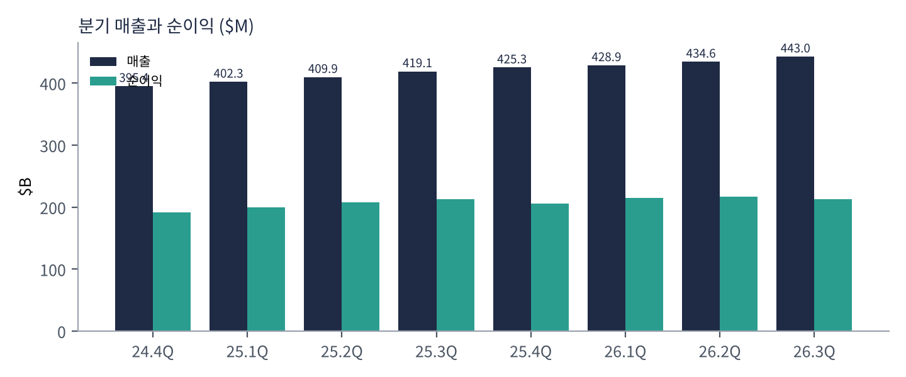
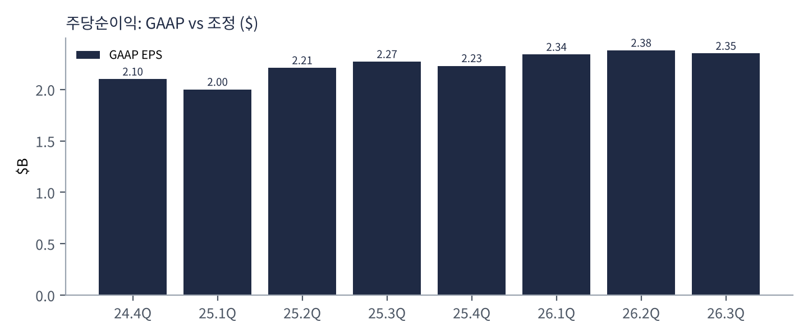
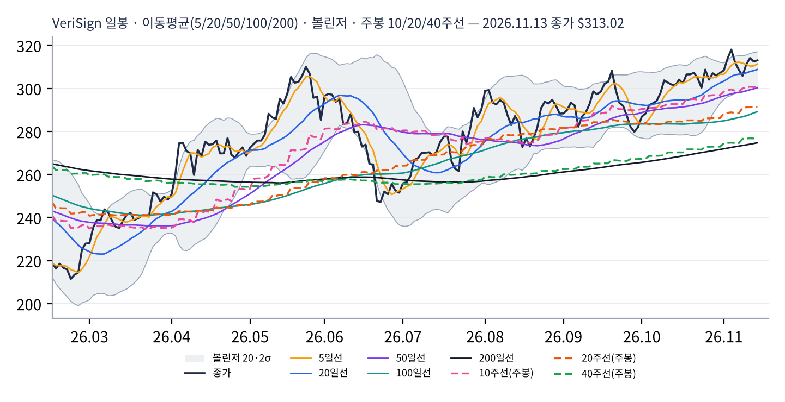
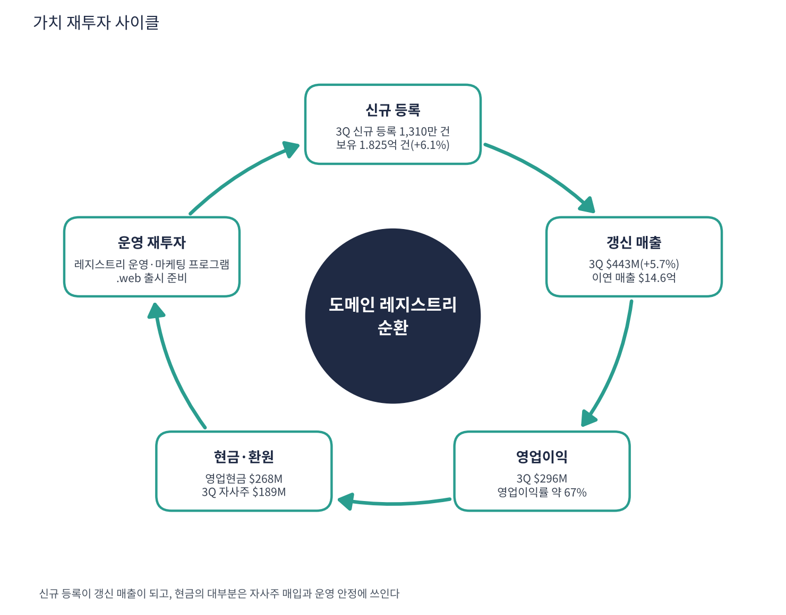

베리사인은 .com·.net 도메인 등록 기록을 관리하는 회사다. 도메인이 갱신될 때마다 정해진 수수료를 받는다. 매출 성장은 5%대로 느리지만 영업이익률이 67%에 달하고 현금을 자사주 매입으로 돌려주는 회사다.
| 항목 | 내용 |
|---|---|
| 종목 | VeriSign (VRSN) · NASDAQ · 인터넷 인프라(도메인 레지스트리) · 버지니아 |
| 밸류에이션 | PER 33.7배 · P/S 16.31배 (11/13 종가 $313.02) |
| 최근 분기(3Q26) | 매출 $4.4억(+5.7%), 영업이익 $3.0억, EPS $2.35 |
| 도메인 | 보유 1.825억 건(+6.1%), 신규 등록 1,310만 건, 갱신율 잠정 74.3%(전년 75.4%) |
| 가이던스 | 2026 매출 $17.55~17.60억, 도메인 증가율 6.5~7% |
| 현금·부채 | 회사: 현금 $4.76억, 이연매출 $14.6억. 차입금은 미수집 |
| 직책 | 인물 | 역할·특징 |
|---|---|---|
| CEO | 짐 비드조스 | 오랜 CEO. 안정적 갱신 매출과 자사주 매입 강조 |
경영 스타일: '독점 계약에서 나오는 현금을 주주에게 돌린다'. 3분기에만 자사주 $1.89억을 샀고 분기 배당 $0.81도 지급한다. 성장보다 이익률과 환원을 우선한다.
인터넷 주소 시스템 .com·.net을 안정적으로 운영하는 기술이 핵심이다.
도메인 수 6~7% 증가와 요금 인상 가능 범위 안에서 성장하고 .web 출시를 준비한다.
다음 실적발표는 세 가지 질문에 답하는 자리다.
1. 운영 재투자가 이번 분기에 개선되나?
2. 악재 '밸류에이션' 부담이 줄어드나?
3. 악재 '성장 둔화' 부담이 줄어드나?
한 줄 판정 규칙: 첫 질문의 운영 재투자가 좋아지면 약한 고리가 풀리고, 그렇지 않으면 현재 사이클의 약점이 그대로 남는다.
일정: 다음 발표일은 확인 필요(이번 분기 발표 후 일정 미확정). 위 현재값은 이 보고서의 기존 숫자다.
| 분기 | 매출 | 순이익 | EPS | 조정 EPS | 특이 사항 |
|---|---|---|---|---|---|
| 2024.4Q | $4.0억 | $1.9억 | 2.10 | – | |
| 2025.1Q | $4.0억 | $2.0억 | 2.00 | – | |
| 2025.2Q | $4.1억 | $2.1억 | 2.21 | – | |
| 2025.3Q | $4.2억 | $2.1억 | 2.27 | – | |
| 2025.4Q | $4.3억 | $2.1억 | 2.23 | – | 4분기 값 근사* |
| 2026.1Q | $4.3억 | $2.1억 | 2.34 | – | |
| 2026.2Q | $4.3억 | $2.2억 | 2.38 | – | |
| 2026.3Q | $4.4억 | $2.1억 | 2.35 | – | 3Q 영업이익 $2.96억, 영업이익률 약 67% |


* 4분기 값은 '연간 − 1~3분기 합' 근사치. 조정 EPS를 따로 발표하지 않아(트레이딩뷰 Reported가 GAAP와 같음) 조정 EPS 열은 '–'로 둔다.
흐름 요약: 분기 매출이 $3.95억에서 $4.43억으로 12% 늘었고 EPS는 $2.10에서 $2.35로 올랐다. 이익이 꾸준히 오르는 구조다. 분기 설비투자는 구하지 못했다.
| 항목 | 값 | 비고 |
|---|---|---|
| 3Q 매출 | $4.43억 | +5.7% |
| 도메인 보유 | 1.825억 건 | +6.1% |
| 신규 등록 | 1,310만 건 | 3Q |
| 갱신율 | 74.3%(잠정) | 전년 75.4% |
매출 대부분이 도메인 갱신 수수료다. 부문·지역 비중은 단일 사업이라 별도 구분이 없다. 갱신율이 1.1%p 내려간 점이 변수다.
베리사인은 '인터넷 주소 시스템의 안정적 관리자'로 남으려 한다.
| 축 | 최근 움직임 |
|---|---|
| 운영 | 레지스트리 안정 운영 |
| 성장 | 도메인 증가 6.5~7%, .web 출시 준비 |
| 환원 | 3Q 자사주 $1.89억, 분기 배당 $0.81 |

| 이동평균 | 값 | 종가 대비 | 해석 |
|---|---|---|---|
| 5일선 | $311.31 | +0.5% | 현재가가 위 |
| 20일선 | $308.78 | +1.4% | 현재가가 위 |
| 50일선 | $300.21 | +4.3% | 현재가가 위 |
| 100일선 | $289.20 | +8.2% | 현재가가 위 |
| 200일선 | $274.72 | +13.9% | 현재가가 위 (+14%) |
주봉 흐름: 52주 저점 $208.9(2026.2.6)에서 꾸준히 올라 2026.11.5 고점 $324.6을 찍고 $313 부근이다. 모든 이동평균선이 현재가 아래에서 우상향한다.
| 규칙 | 기준 | 현재 값 | 신호 |
|---|---|---|---|
| 장기 추세 필터 | 종가 vs 200일선 | $313.02 > $274.72 | 매수 |
| 중장기 교차 | 50일선 vs 200일선 | $300.21 > $274.72 | 매수 |
| 단기 교차 | 20일선 vs 50일선 | $308.78 > $300.21 | 매수 |
| 돈키언 채널 | 55일 고가 $324.63 / 저가 $275.23 | 중간값 $299.93 위 | 매수 |
| 1개월 모멘텀 | 21거래일 수익률 | +2.9% (기준 $304.09) | 매수 |
| 3개월 모멘텀 | 63거래일 수익률 | +14.8% (기준 $272.77) | 매수 |
| 6개월 모멘텀 | 126거래일 수익률 | +5.2% (기준 $297.57) | 매수 |
| 12개월 모멘텀 | 252거래일 수익률 | +25.0% (기준 $250.49) | 매수 |
| 종합 (8개 평균) | +1.00 | 강한 매수 |
해석: 8개 신호 중 매수 8개, 매도 0개(점수 +1.00, 강한 매수)다. 14일 ATR $8.71 (2.8%).
| 가격·조건 | 무엇이 바뀌나 | 의미 |
|---|---|---|
| $274.72 돌파 | 200일선 | 이탈하면 매수 → 매도 |
| 50일선이 200일선 위로 | 50/200 교차 | 이탈하면 매수 → 매도 |
| 20일선이 50일선 위로 | 20/50 교차 | 이탈하면 매수 → 매도 |
| 구분 | 가격대 | 근거 |
|---|---|---|
| 저항 1 | $324.6 | 52주 고점(11/5) |
| 저항 2 | 추가 저항 없음 | 돌파 시 신고점 |
| 지지 1 | $311.3 / $308.8 | 5일선 $311.3, 20일선 $308.8 |
| 지지 2 | $300.2 / $289.2 | 50일선 $300.2, 100일선 $289.2 |
점수 +1.0으로 추세가 가장 강하다. 다만 PEG가 4.07이라 추격보다 20일선($308.8) 눌림에서 분할로 접근한다. 100일선($289.2) 종가 이탈 시 정리한다. 갱신율 추이가 확인 지점이다.
| 악재 요인 | 내용 | 강도 |
|---|---|---|
| 성장 둔화 | 3Q 매출 +5.7% | 중간 |
| 갱신율 하락 | 74.3% (전년 75.4%) | 중간 |
| 밸류에이션 | PEG 4.07 | 높음 |
| 규제·계약 | 레지스트리 계약 의존(가격 규제 위험, 일반 가정) | 중간 |
| 티커 | 회사 | PER(TTM) | PEG | P/S | EPS 성장(YoY) |
|---|---|---|---|---|---|
| VRSN | 베리사인 | 33.7배 | 4.07 | 16.31배 | +8% |
| GDDY | 고대디 | 15.6배 | 0.59 | 2.72배 | +26% |
| AKAM | 아카마이 | 33.1배 | – | 2.98배 | -24% |
| DOCS | 닥시미티 | 46.4배 | – | 9.42배 | -43% |
DOCS는 도메인과 무관한 업종이라 참고만 한다. 값은 스캐너 기준이다.
베리사인은 영업현금이 크고 현금성 자산은 적다. 현금 대부분을 자사주 매입에 쓰기 때문이다.
| 지표 | 값 | 계산·출처 | 해석 |
|---|---|---|---|
| 현금 | $4.76억 | 회사 | – |
| 이연매출 | $14.6억 | 회사 | 선결제 도메인 수수료 |
| 3Q 영업현금흐름 | $2.68억 | 회사 | 자사주 $1.89억 사용 |
| 총차입금 | 미수집 | – | 확인 필요 |
| 기준 | 값 | 비고 |
|---|---|---|
| P/S (TTM) | 16.31배 | 스캐너 |
| 동종 | AKAM 3.0, GDDY 2.7 | 11/13 스캐너 |
해석: P/S는 높지만 영업이익률 약 67%가 반영된 값이다. 스트레스 가정(내 가정): P/S 14배 $269(-14%) · P/S 16배 $307(-2%) · P/S 18배 $345(+10%) · P/S 20배 $384(+23%).
| 지표 | 값 | 판정 |
|---|---|---|
| PER (TTM) | 33.7배 | 동종 대비 보통 |
| 영업이익률 | 약 67% | 3Q $296M ÷ $443M(내 계산) |
| EBITDA | 미수집 | 영업이익으로 갈음 |
| 방식 | PER | EPS 성장률 | PEG | 판정 |
|---|---|---|---|---|
| 트레이딩뷰 (GAAP TTM) | 33.7배 | +8% | 4.07 | 1.0 초과 |
| 최근 4분기 EPS 합 비교(내 계산) | 33.7배 | +8.4% | 약 4.0 | $9.30 ÷ $8.58 |
판정: PEG 4.07로 투자 적격 구간(≤1.0)이 아니다. 이익이 안정적이지만 성장이 느려 가격이 비싸다는 뜻이다.

베리사인의 사이클은 신규 등록 → 갱신 매출 → 영업이익 → 현금·환원 → 운영 재투자 → 다음 등록이다. 재투자 비중이 작아 성장은 느리지만 현금이 안정적으로 쌓인다.
| 고리 | 현재 숫자 | 고리 강도 | 약해지는 신호 |
|---|---|---|---|
| ① 신규 등록 | 3Q 1,310만 건, 보유 +6.1% | 강함 | 신규 등록 둔화 |
| ② 갱신 매출 | 3Q +5.7%, 이연매출 $14.6억 | 강함 | 갱신율 하락 |
| ③ 영업이익 | 3Q $2.96억, 이익률 약 67% | 강함 | 운영비 증가 |
| ④ 현금·환원 | 영업현금 $2.68억, 자사주 $1.89억 | 강함 | 환원 축소 |
| ⑤ 운영 재투자 | 레지스트리 운영, .web 준비 | 보통 | 신제품 부진 |
구조: ①~④가 강하다. 갱신율이 계속 떨어지면 ②가 약해진다.